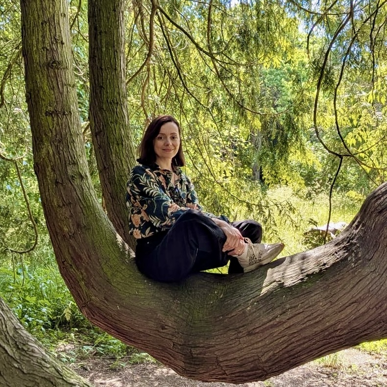
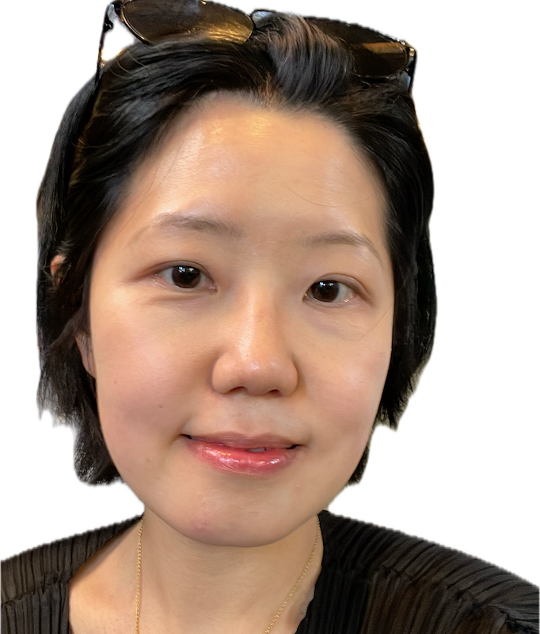
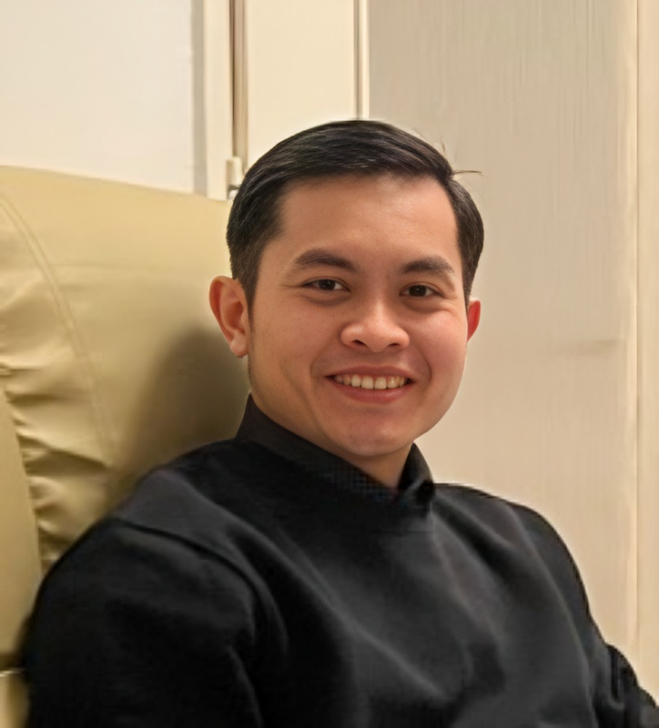
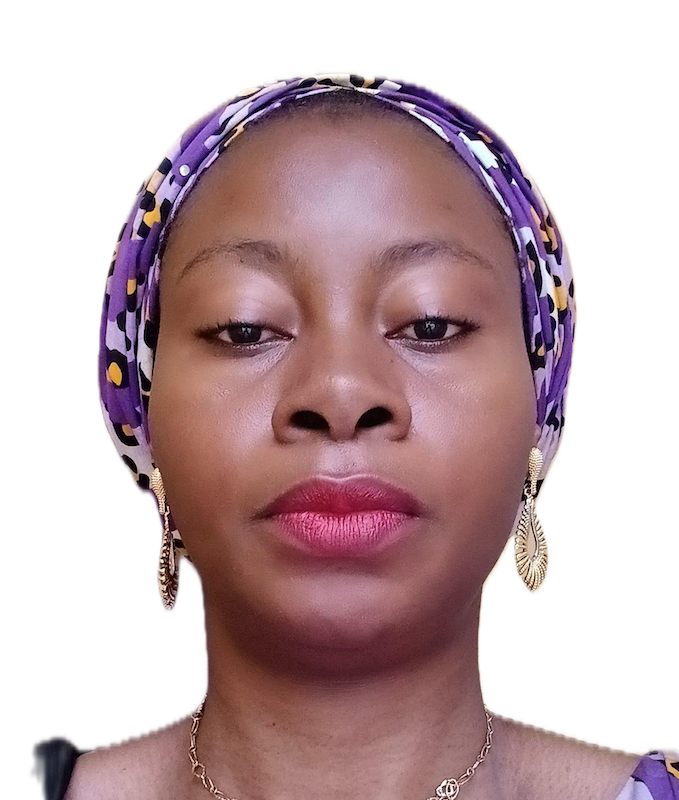
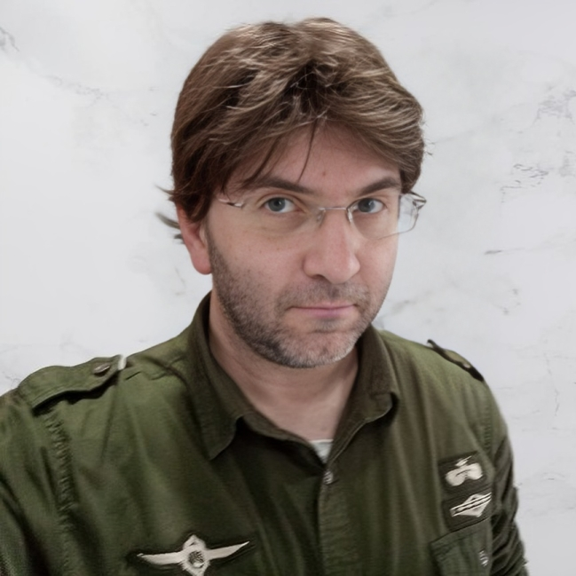

Meet the team
Joseph is an Associate Professor of Spanish Linguistics in the Spanish and Portuguese Department and Associate Faculty in the Department of Linguistics at Rutgers University, New Brunswick. His main interests are in phonetics, laboratory phonology, and second language acquisition. A principle aim of his research is to better understand the relationship between language use and sound representation in the multilingual mind, as well as the structure of sound systems in human languages. Most of his research is conducted on bilinguals of varying proficiency and linguistic experience. Some of his recent projects have centered on native phonetic experience and its influence on L2 speech production, perception and lexical processing. He focuses his attention on coding, statistical analysis, data visualization, and reproducible research, as well as training researchers to implement open research practices in the speech sciences, particularly in Bilingualism/Second Language Acquisition research. He also enjoys playing music, Casio watches and anything related to el andalú.
I am a Lecturer (= Assistant Professor) in the Linguistics and English Language department of the University of Edinburgh (UK). I take care of the quantitative methods and statistics provision in the department, by developing and delivering a series of courses and workshops. My main research expertise spans different areas of phonetology (phonology, phonetics and speech), both from a synchronic and diachronic perspective. I also work on other areas within linguistics, like language description and biolinguistic diversity. I am a strong advocate of Open Research practices, with a special interest in Bayesian approaches to quantitative methods.
Amr El-Zawawy
Associate Editor
Amr M. El-Zawawy is Professor of Linguistics and Translation in the Department of English of Alexandria University, Egypt, having obtained his MA and PhD from the same institution. He also held distinguished positions such as chairman of the English Dept., Faculty of Education, Alexandria University and Vice-Dean, Pharos University in Alexandria. His research focus is simultaneous interpretation, cognitive and contrastive linguistics, literary translation, and syntax and semantics. His recent publications include the books Studies in Contrastive Linguistics and Stylistics (2016) and Exploring the Cognitive Processes of Simultaneous Interpreting (2019), and Issues in English-Arabic-English Translation (2023), among another five books and translations as well as over twenty articles in high-ranking international journals.
Victoria Beatrix Fendel (D.Phil. Oxford, 2018) is a researcher in historical linguistics at the University of Oxford, editor of the Classics section of the Literary Encyclopaedia, and language leader for Ancient Greek in the PARSEME (UniDive COST CA21167) initiative (www.ancientgreekmwe.com). Her research focusses on language contact (Oxford University Press, 2022) and multi-word expressions in literary, epigraphic, and papyrological sources (Language Science Press, 2024; De Gruyter Brill, 2025; OpenBooks, 2026).

Jessica Hampton
Chief Editor
Jessica Hampton is Lecturer in English Language and Linguistics at the University of Liverpool. Her research explores minoritized groups and endangered languages at the intersection of place, identity, and belonging from an environmental perspective. She is working on a monograph, Ecolinguistics and Endangered Languages: Emplacing Ecological Wisdom through Language Revitalisation, as part of the Bloomsbury Advances in Ecolinguistics series. She is also co-leading the first-of-its-kind survey on the vitality of the languages of northern Italy and serves as the committee member responsible for the BA-funded project aimed at expanding a picture database called MULTIPIC.

Hae-Sung Jeon
Associate Editor
Hae-Sung Jeon is a Senior Lecturer in Psychology at the School of Psychology and Humanities, University of Central Lancashire, UK. As a linguist-cognitive psychologist specialising in speech communication, she holds a Master’s in Developmental Linguistics from the University of Edinburgh and earned her PhD in phonetics from the University of Cambridge (2012). Her research focuses on phonetics, multimodal communication, psychology of language, and ageing and language.
Cristina Lastres-López
Associate Editor
I am an Associate Professor in English Language and Linguistics at the University of Seville (Spain). I am also affiliated at the research unit for Variation, Linguistic Change and Grammaticalization at the University of Santiago de Compostela (Spain). I hold a PhD in English Linguistics (2020, Extraordinary PhD Award; supervisor: Prof. Teresa Fanego) from the University of Santiago de Compostela, as well as a BA in English Language and Literature (2015) from the same institution and an MA in English Linguistics (2016) from University College London. I carry out research in the fields of corpus linguistics, discourse analysis, pragmatics, syntax and contrastive linguistics (working mainly on English, French and Spanish). Between 2016 and 2019, I served on the Executive Board of the Spanish Association for Early-Career Researchers in Linguistics (Asociación de Jóvenes Lingüistas) and was also on the Editorial Board of its online journal Estudios Interlingüísticos. From 2018 to 2019 I served as President of the association and as the journal’s Editor-in-Chief.

Danang Satria Nugraha
Associate Editor
Danang Satria Nugraha, Ph.D., is an assistant professor at Sanata Dharma University, Indonesia, and a postdoctoral fellow at Palacký University Olomouc, Czech Republic. He earned his Ph.D. in Linguistics from the University of Szeged, Hungary (2025). His research specializes in corpus linguistics and morphology, with publications in Q1 journals. He also serves as a peer reviewer for several international journals.

Mariam Olugbodi
Associate Editor
Mariam Olugbodi is a tenured Assistant Professor of Phonetics and Psycholinguistics at Kwara State University, Nigeria, teaching L2 speech variation as well as speech comprehension and production, at the Department of English and Linguistics, and Communications in English at the Centre for General Studies. She obtained a PhD in Phonetics 2024 from the University of Ilorin focusing on Occupational and Geographical Variations in English Language Accents in Nigeria.

Francesco Perono Cacciafoco
Associate Editor
Dr Francesco Perono Cacciafoco (Ph.D. University of Pisa, Pisa, Italy, 2011), ΣΞ, is, currently, an Associate Professor in Linguistics at Xi’an Jiaotong-Liverpool University (XJTLU), School of Humanities and Social Sciences (HSS), Department of Applied Linguistics (LNG), Suzhou, China, where he teaches Historical Linguistics, Language Documentation, and History of English. Before joining XJTLU, he was a Senior Lecturer in Historical Linguistics at Nanyang Technological University (NTU), Singapore. More information about his academic work can be found here, https://scholar.xjtlu.edu.cn/en/persons/FrancescoPerono.